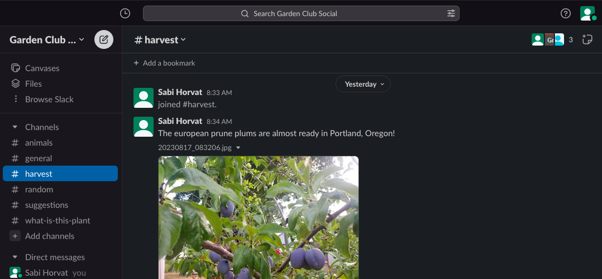

Garden Club Social
Welcome to Garden Club!
Garden Club is new and starting from the ground up. This informational page was launched on August 16, 2023.
Please submit any suggestions in the *Suggestions* Slack channel once you join (link to join below).
How to join and use Garden Club
Here is the invitation link to join:
https://join.slack.com/t/duck-jyb4569/shared_invite/zt-21h2k94du-PNCwVTxUc31GmBcCG6LJdw/.
Then, whenever you'd like to feel good:
1. Either download the Slack app for your phone
2. Or use the following link to chat:
https://gardenclubsocial.slack.com/.
About Garden Club
The purpose of Garden Club is to connect gardeners, orchardists, et cetera via a social media that does not contain all sorts of other noise.
Follow the Slack channels that are relevant and of interest to you!
Again, this was launched on August 16, 2023.
Your participation will help the forum grow!
